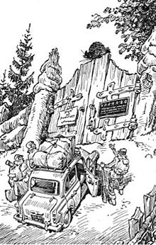

«Понедельник начинается в субботу» (1965) —
фантастическая юмористическая повесть братьев Стругацких, одно из наиболее своеобразных воплощений советской утопии 1960-х годов, художественная
реализация мечты авторов о возможности для современного талантливого человека сосредоточиться на научном творчестве и познании тайн Вселенной.
Существенную роль в повести играют также ярко выраженные сатирические мотивы; в ней высмеиваются приспособленцы, бюрократы и жулики от науки.
- Жанр: повесть фантастика
- Автор: Братья Стругацкие
- Язык оригинала: русский
- Год написания: 1964—1965 гг.
- Публикация: 1964
- Отдельное издание: 1965
- Издательство: Детская литература
Сюжет
Повесть состоит из трёх частей: «Суета вокруг дивана», «Суета сует», «Всяческая суета».
Первая часть композиционно работает как вводная, вторая носит
сатирический и полемический характер, третья пытается исследовать природу научного творчества и роль, которую играет в нём воображение и способность к нестандартному мышлению.

В произведении действуют и упоминаются персонажи и предметы русских сказок, фольклорных и мифологических произведений; несмотря на это
повествование носит скорее подчёркнуто бытовой, чем сказочный характер.
- Ⅰ. Авгуры — традиционно занимаются предсказаниями
- Ⅱ. Вурдалаки — согласно глоссарию, «Маги, вставшие по тем или иным причинам на путь абстрактного зла»
- Ⅲ. Василий, говорящий кот — «Кот учёный» из пролога поэмы Пушкина «Руслан и Людмила»
- Ⅳ. Гекатонхейры — сторукие пятидесятиголовые великаны, сыновья верховного бога Урана (неба) и Геи (земли): Бриарей, Котт и Гиес. В книге живут в
- виварии НИИЧАВО , иногда привлекаются для общих работ в качестве грузчиков
- Ⅴ. Гидра — согласно глоссарию, «реально существующая многоголовая рептилия, дочь З. Горыныча и плезиозаврихи из озера Лох-Несс.»
- Ⅵ. Говорящая щука — щука из русской народная сказки «По щучьему велению»
- Ⅶ. Голем — согласно глоссарию, «один из первых кибернетических роботов»
- Ⅷ. Гомункулус — «искусственное человекоподобное существо, используют для биомеханического моделирования.»
- Ⅸ. Гномы — согласно глоссарию, «большинство гномов — это забытые и сильно усохшие дубли»
- и многие другие…